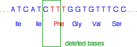
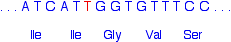
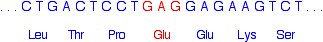
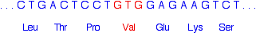

|
DNA - MUTATIONS This page takes a very brief look at what happens if the code in DNA becomes changed in some way, and the effect that would have on the proteins it codes for. It is designed for 16 - 18 year old chemistry students. In fact, most chemistry students won't need this - check your syllabus and past papers before you go on. | ||
|
Note: If you have come straight to this page from a search engine, you should be aware that this is the final page in a sequence of pages about DNA, RNA and protein synthesis, starting with the structure of DNA. | ||
|
Random changes to the genetic code Copying errors when DNA replicates or is transcribed into RNA can cause changes in the sequence of bases which makes up the genetic code. Radiation and some chemicals can also cause changes. The examples which follow show some of the easier-to-understand effects of this. Changes to individual bases Remember that a set of three bases in a gene in DNA codes for a particular amino acid. If you have followed this sequence of pages from the beginning, you will have come across this table showing the codons in DNA:
A gene will be made up of a string of these codes rather like a string of 3-letter words in a sentence. We'll use that as a simple analogy. Take the sentence: the big fox bit the dog but not the boy Suppose one letter got changed in this by accident. Suppose, for example, the "d" in dog got replaced by a "p". The sentence would now read: the big fox bit the pog but not the boy Clearly this doesn't make complete sense any more. Would that matter if the same thing happened in a gene? It depends! If you look back at the table, there are several amino acids which are coded for by more than one base combination. For example, glycine (Gly) is coded for by GGT, GGC, GGA and GGG. It doesn't matter what the last base is - you would get glycine whatever base followed the initial GG. That means that a mutation at the end of a codon like this wouldn't make any difference to the protein chain which would eventually form. These are known as silent mutations. Alternatively, of course, you could well get a code for a different amino acid or even a stop codon. If a stop codon was produced in the middle of the gene, then the protein formed would be too short, and almost certainly wouldn't function properly. If a different amino acid was produced, how much it mattered would depend on whereabouts it was in the protein chain. If it was near the active site of an enzyme, for example, it might stop the enzyme from working entirely. On the other hand, if it was on the outside of an enzyme, and didn't affect the way the protein chain folded, it might not matter at all. Inserting or deleting bases The situation is more dramatic if extra bases are inserted into the code, or some bases are deleted from the code. Using our example sentence from above, and keeping the three letter word structure: If you insert a single extra base: the big fro xbi tth edo gbu tno tth ebo y An extra "r" is inserted in "fox". If the sentence still has to be read three letters at a time (as in DNA), everything from then on becomes completely meaningless. If you delete a single base: the big fxb itt hed ogb utn ott heb oy This time the "o" in "fox" has been deleted. And again, because we have to read the letters in groups of three, the rest of the sentence becomes completely wrecked. So does this matter? Well, of course it does! Large chunks of the protein will consist of completely wrong amino acid residues. We've looked so far at inserting or deleting one base. What if you do it for more than one? The effect is the same unless you add or delete multiples of three bases - without changing any other codons. If you added an extra three bases between two existing codons, then essentially you are just adding an extra word. the big fox bit the xjy dog but not the boy That extra word represents an extra codon in the DNA, and so an extra amino acid residue in the protein chain. Does this matter? It depends where it is in the chain (Is it important to the active site of an enzyme, for example?), and whether it affects the folding of the chain. What if the three bases were inserted so that they broke up an existing codon? Here is the same extra "word", "xjy", dropped in the word "bit". Everything is then reshuffled into groups of three letters. the big fox bxj yit the dog but not the boy You can see that the effect is again fairly limited. It will change one codon completely, and introduce an extra codon. That would give you one different amino acid and one extra amino acid in the chain. Again, how much that would affect the final protein depends on where it happens in the chain. Deleting a whole codon again leaves most of the protein chain unchanged. Again, whether the function of the protein is affected depends on where the missing amino acid should have been and how critical it was to the way the protein folded. | ||
|
Important: The material on remainder of this page was written for a specific UK syllabus which no longer requires it. I have left it here in case it is useful to anyone else. Read it out of interest if you want to, but check whatever syllabus you are doing before you waste any time learning it. | ||
|
Some diseases caused by mutation The following examples illustrate some of the changes we've looked at above and how they can result in disease. Cystic fibrosis Cystic fibrosis is an inherited disease which affects the lungs and digestive system. It results from mutation in a gene responsible for making a protein which is involved in the transport of ions across cell boundaries. The effect is to produce a sticky mucus which clogs the lungs and can lead to serious infection. A similar sticky mucus also blocks the pancreas (a part of the digestive system) which provides enzymes for breaking down food. This gets in the way of the processes which convert the food into molecules which can be absorbed by the body. There are lots of different mutations which can cause this, but we'll just have a quick look at the one which accounts for about 70% of cystic fibrosis cases. The base sequence in the part of the gene affected ought to look like this:
The phenylalanine (Phe) in red is the amino acid which is missing from the final protein in many sufferers from cystic fibrosis. However, it isn't quite as simple as just losing the TTT codon. Instead, the three bases lost are:  That leaves the sequence:  Notice that the amino acid sequence is identical to before but without the phenylalanine. How did that happen when we didn't actually remove the whole of the phenylalanine codon? If you look carefully, you will see that the codon for the second isoleucine (Ile) is different from before. It so happens that isoleucine is coded for by both ATC and ATT. Once the second T (the red one) has joined the existing AT, all the rest of the base sequence is exactly what it was before. Sickle cell anaemia (US: anemia) This is so called because red blood cells change their shape from the normal flexible doughnut shape to a much more rigid sickle shape - rather like a crescent moon. It results from the change of a single base in a gene responsible for making one of the protein chains which makes up haemoglobin (US: hemoglobin). The affected part of the gene should read:  What it actually reads in someone suffering from sickle cell anaemia is:  The effect of this single change is to make the haemoglobin temporarily polymerise to make fibres after it has released the oxygen that it carries around the body. This changes the shape of the red blood cells so that they don't flow so easily - it makes them sticky, especially in small blood vessels. This can cause pain and lead to organ damage. Haemophilia (US: hemophilia) Sufferers from haemophilia lack a protein in the blood which allows it to clot. That means that if someone with haemophilia cuts themselves, the wound will just continue to bleed. There are all sorts of mutations which cause haemophilia. One which is easy to understand is caused by changing a single base at the beginning of a codon for argenine (CGA) somewhere in the gene to give TGA. If you look back to the table higher up the page, you will find that TGA is a stop codon. All that will be produced is a useless fragment of the intended protein.
© Jim Clark 2007 (modified May 2016) |
||